プレゼン練習AIレビューアプリ 操作マニュアル
録音・録画したプレゼン内容を文字起こしし、役割になりきったAIレビュアーからフィードバックを受けられる社内向けアプリケーションです。
1. このアプリについて
このアプリは、発表（プレゼンテーション）練習を支援するツールです。ブラウザでの録音・音声ファイル・動画ファイルのいずれかから発表内容を文字起こしし、 「大学教授」「上司」「初学者」など様々な役割になりきったAIレビュアーに発表内容を読ませて、フィードバックコメントをもらうことができます。
- 音声・動画から発表内容を自動で文字起こしし、読みやすい文章に整えて表示
- 役割（ペルソナ）ごとにAIレビュアーを複数人追加し、それぞれの視点でコメントをもらえる
- レビュアーごとに過去のフィードバック傾向を記憶し、次回以降のコメントに反映（成長の記録）
- 動画をアップロードすると、スライド切り替わりを自動検出し、スライドごとの発話内容を確認できる
2. アプリへのアクセス方法
- 社内ネットワーク（またはVPN接続）の状態で、ブラウザから本アプリのURLにアクセスします。
- ページが表示されたら、そのまま利用を開始できます。
3. 画面構成
画面は左右2カラムのレイアウトです。
- 左パネル：録音・音声アップロード・動画解析のタブ、文字起こし結果の編集エリア、レビュアー追加／記憶リセットボタン
- 右パネル：追加したAIレビュアーのカードが並び、各レビュアーごとにコメント取得・記憶確認ができる
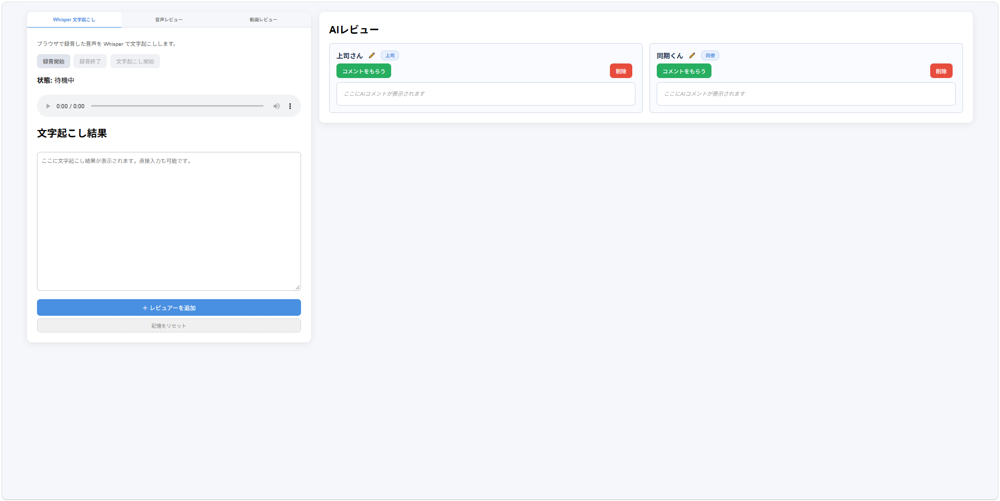
4. 文字起こし機能
左パネル上部の3つのタブで、発表内容の入力方法を切り替えられます。
4-1. マイク録音で文字起こしする
- 「Whisper 文字起こし」タブを選択します。
録音開始ボタンを押すと、ブラウザがマイクの使用許可を求めるので許可します。- 発表内容を話します。
録音終了ボタンを押すと録音が停止し、録音した音声を再生して確認できます。文字起こし開始ボタンを押すと、文字起こし＋文章の整形が行われ、下部の「文字起こし結果」欄にテキストが表示されます。
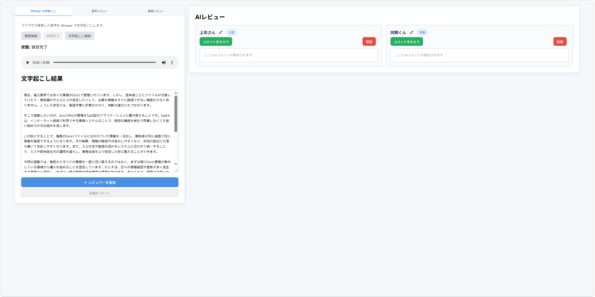
4-2. 音声ファイルをアップロードして文字起こしする
- 「音声レビュー」タブを選択します。
ファイルを選択から音声ファイル（例: 事前に録音したものやスマホの録音データ）を選びます。選択すると自動でプレビュー再生できます。文字起こし開始ボタンを押すと、マイク録音時と同様に文字起こし結果が表示されます。
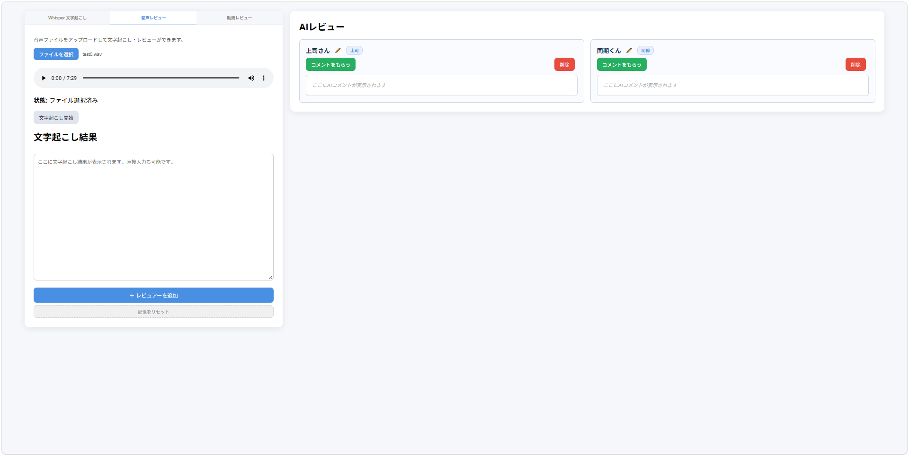
4-3. 動画をアップロードしてスライド解析する
動画（mp4 / webm / mov）をアップロードすると、音声の文字起こしに加えて、スライドの切り替わりを自動検出し、
「どのスライドで何を話していたか」を一覧で確認できます。
- 「動画レビュー」タブを選択します。
動画を選択から発表動画ファイルを選びます。選択すると動画プレビューが表示されます。解析開始ボタンを押します。動画の長さによっては解析に数分かかる場合があります（状態欄にその旨のメッセージが表示されます）。-
解析完了後、以下が表示されます。
- 下部の「文字起こし結果」欄に発表全文（整形済み）
- 「スライド解析結果」に、検出されたスライドごとのサムネイル画像・表示時間・そのスライド区間で話した内容
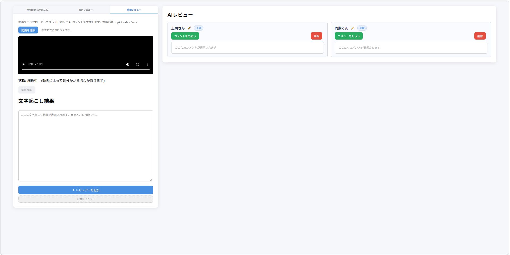
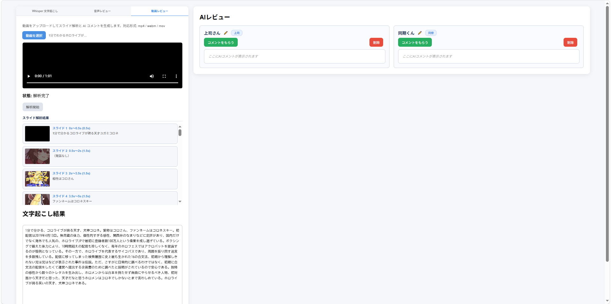
5. AIレビュアーの追加
文字起こし結果が用意できたら、AIレビュアーを追加してフィードバックをもらいます。
- 左パネル下部の
＋ レビュアーを追加ボタンを押すと、モーダルウィンドウが開きます。 - 「名前」欄にレビュアーの名前（任意の呼び名、例: 田中先生）を入力します。
- 「役割」プルダウンから、レビュアーに演じさせたい役割（大学教授・上司・初学者など）を選択します。役割の一覧は 9. 役割（キャラクター）一覧 を参照してください。
追加ボタンを押すと、右パネルにそのレビュアーのカードが追加されます。
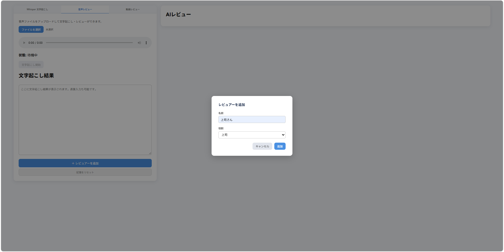
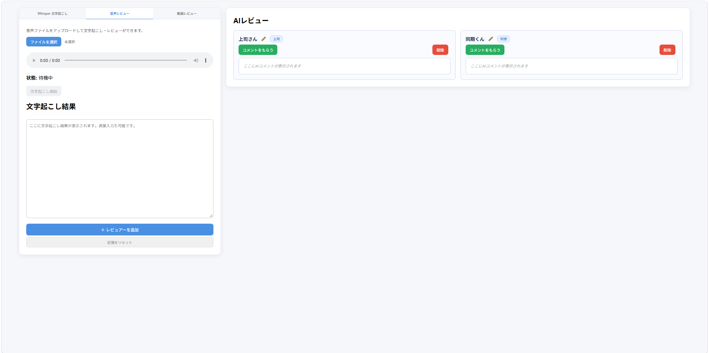
6. AIレビューを受ける
- 「文字起こし結果」欄に発表テキストが入っていることを確認します（空の場合はレビューできません）。
- 右パネルの各レビュアーカードにある
コメントをもらうボタンを押します。 -
生成中は「コメント生成中...」と表示され、完了すると以下の内容がカード内に表示されます。
- 総評
- 良かった点 / 改善点（それぞれ箇条書き）
- 特に気になった点（その役割ならではの視点）
- 質問 / 次のアクション（それぞれ箇条書き）
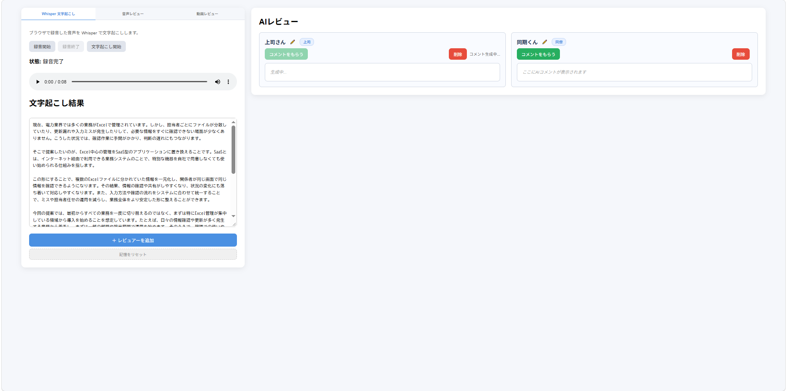
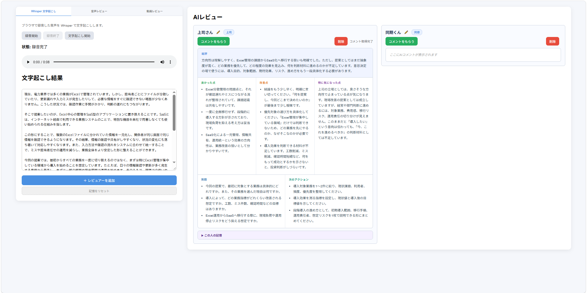
7. レビュアーの管理（名前変更・削除）
- 名前変更：レビュアーカードの名前部分、または横の✏️アイコンをクリックすると入力欄に切り替わります。名前を編集して
Enter（またはフォーカスを外す）と保存されます。 - 削除：カード内の
削除ボタンを押すと、そのレビュアーとそれに紐づく記憶（プロファイル・フィードバック履歴）が削除されます。
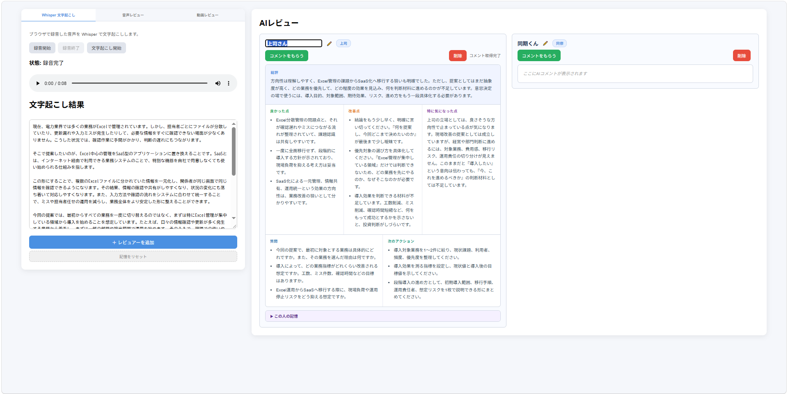
8. レビュアーの記憶（プロファイル）機能
各レビュアーは、コメントを生成するたびに過去のフィードバック傾向を記憶し、次回のコメント生成時にその記憶を踏まえた発言をします。 レビューを重ねるほど「同じ指摘を繰り返していないか」「前回から改善された点」などが蓄積されていきます。
- レビュアーが一度でもコメントを生成すると、カード下部に「この人の記憶」という折りたたみセクションが表示されるようになります。
- クリックして展開すると、以下の情報が確認できます。
- 記憶の要約（サマリー文）
- 繰り返し指摘してきた点
- 前回から改善された点
- 気になっている弱み
- よく褒める点
- 前回のアドバイス
-
左パネル下部の
記憶をリセットボタンを押すと、確認ダイアログの後、全レビュアーの記憶（フィードバック履歴）がリセットされます。レビュアー自体（名前・役割）は削除されません。
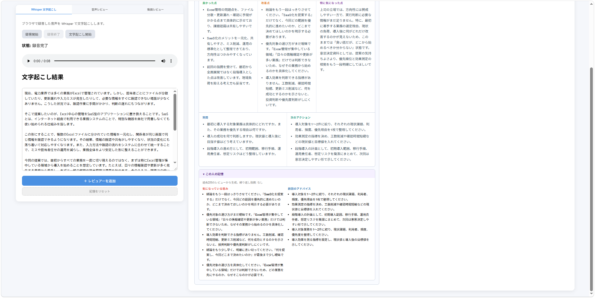
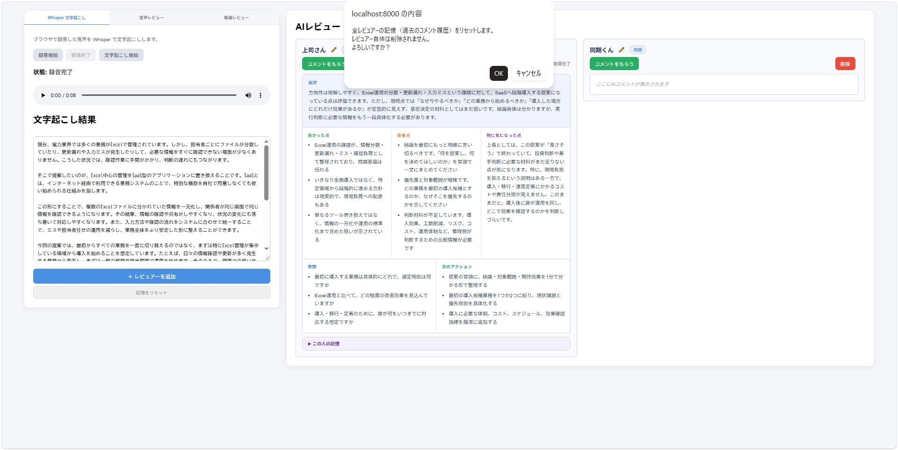
9. 役割（キャラクター）一覧
レビュアー追加時に選べる役割は以下の12種類です。実務寄りの役割と、個性的なキャラクター役割があります。
10. よくあるトラブル
| 症状 | 対処方法 |
|---|---|
| 録音開始ボタンを押しても録音が始まらない | ブラウザのマイク使用許可がブロックされていないか確認してください。ブラウザのアドレスバー付近のアイコンからサイトの権限設定を見直せます。 |
| 文字起こし・動画解析に時間がかかる | 利用開始直後や、長い動画・音声を扱う場合は処理に数分かかることがあります。状態欄のメッセージが変わるまでそのままお待ちください。 |
| 「コメントをもらう」を押しても反応がない／エラーになる | 「文字起こし結果」欄が空でないか確認してください。空の場合はエラーメッセージが表示されます。 |
| 動画解析で対応形式エラーが出る | 対応形式は mp4 / webm / mov のみです。別形式の場合は変換してからアップロードしてください。 |
| 上記以外のエラーが繰り返し発生する | 時間をおいて再度お試しいただくか、解消しない場合はMattermostにて @r-kinoshita までお問い合わせください。 |